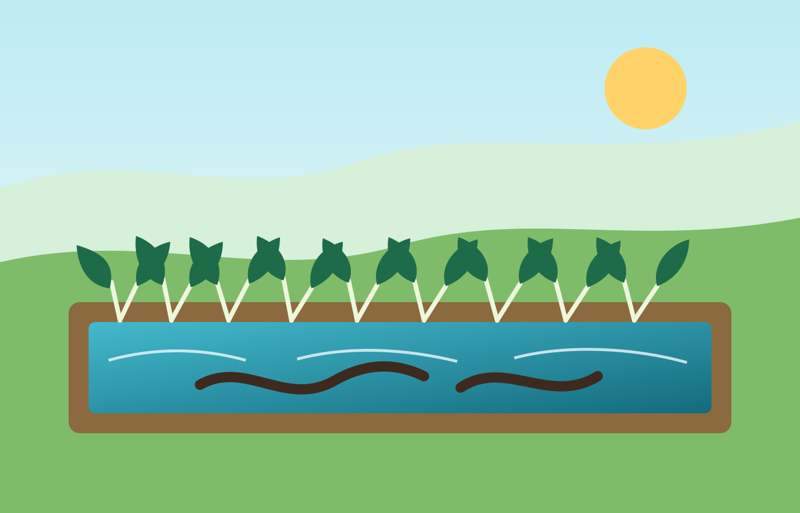

Edukasi Pertanian Organik
Mengenalkan pemanfaatan rumput sebagai bahan pupuk organik yang mudah ditemukan di sekitar desa.
Program Kerja Utama KKN Universitas Trunojoyo Madura
Website statis untuk media artikel, dokumentasi, edukasi, dan monitoring sederhana program padi hidroganik berbasis pupuk organik dari rumput dengan pemanfaatan genangan air untuk budidaya belut.

Dashboard Ringkas
Ringkasan Manfaat
Padi hidroganik dan budidaya belut dapat menjadi contoh demplot pembelajaran masyarakat tentang pertanian organik, efisiensi air, serta diversifikasi hasil.
Mengenalkan pemanfaatan rumput sebagai bahan pupuk organik yang mudah ditemukan di sekitar desa.
Membantu pencatatan perkembangan padi, kondisi air, dan populasi belut secara berkala.
Menyimpan rangkaian kegiatan KKN agar mudah dibagikan kepada perangkat desa, warga, dan dosen pembimbing.

Alur Program
Siapkan media tanam, pupuk organik dari rumput, dan area genangan air.
Tanam padi hidroganik lalu tebarkan belut saat kondisi air sudah stabil.
Catat perkembangan padi, kondisi air, serta jumlah belut hidup dan mati.
Fitur Website
Semua halaman dibuat statis, ringan, dan bisa langsung dibuka dari HP tanpa login atau database.

Kumpulan artikel singkat tentang padi hidroganik, pupuk organik, dan integrasi padi-belut.

Timeline kegiatan mulai dari persiapan demplot sampai monitoring mingguan.

Tabel dan grafik sederhana berbasis data array JavaScript yang mudah diedit.

Grid foto kegiatan dengan caption yang dapat diganti menggunakan dokumentasi asli.
Siap Diganti Data Asli
Template ini cocok untuk publikasi program KKN di GitHub Pages, Netlify, atau Vercel.